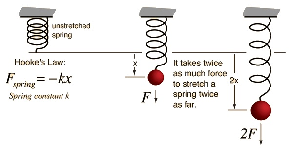

Born in Freshwater on England's Isle of Wight in 1635, scientist Robert Hooke was educated at Oxford and spent his career at the Royal Society and Gresham College. His research and experiments ranged from astronomy to biology to physics; he is particularly recognized for the observations he made while using a microscope and for "Hooke's Law" of elasticity. Hooke died in London in 1703.
Robert Hooke was born in the town of Freshwater, on England’s Isle of Wight, on July 18, 1635. His parents were John Hooke, who served as curate for the local church parish, and Cecily (née Gyles) Hooke.
Initially a sickly child, Hooke grew to be a quick learner who was interested in painting and adept at making mechanical toys and models. After his father’s death in 1648, the 13-year-old Hooke was sent to London to apprentice with painter Peter Lely. This connection turned out to be a short one, and he went instead to study at London’s Westminster School.
In 1653, Hooke enrolled at Oxford's Christ Church College, where he supplemented his meager funds by working as an assistant to the scientist Robert Boyle. While studying subjects ranging from astronomy to chemistry, Hooke also made influential friends, such as future architect Christopher Wren.
Hooke was appointed curator of experiments for the newly formed Royal Society of London in 1662, a position he obtained with Boyle's support. Hooke became a fellow of the society in 1663.
Unlike many of the gentleman scientists he interacted with, Hooke required an income. In 1665, he accepted a position as professor of geometry at Gresham College in London. After the "Great Fire" destroyed much of London in 1666, Hooke became a city surveyor. Working with Wren, he assessed the damage and redesigned many of London’s streets and public buildings.
A true polymath, the topics Hooke covered during his career include comets, the motion of light, the rotation of Jupiter, gravity, human memory and the properties of air. In all of his studies and demonstrations, he adhered to the scientific method of experimentation and observation. Hooke also utilized the most up-to-date instruments in his many projects.
Hooke’s most important publication was Micrographia, a 1665 volume documenting experiments he had made with a microscope. In this groundbreaking study, he coined the term "cell" while discussing the structure of cork. He also described flies, feathers and snowflakes, and correctly identified fossils as remnants of once-living things.
The 1678 publication of Hooke's Lectures of Spring shared his theory of elasticity; in what came to be known as "Hooke’s Law," he stated that the force required to extend or compress a spring is proportional to the distance of that extension or compression. In an ongoing, related project, Hooke worked for many years on the invention of a spring-regulated watch.
Hooke never married. His niece, Grace Hooke, his longtime live-in companion and housekeeper, as well as his eventual lover, died in 1687; Hooke was inconsolable at the loss.
Hooke's career was marred by arguments with other prominent scientists. He often sparred with fellow Englishman Isaac Newton, including one 1686 dispute over Hooke’s possible influence on Newton’s famous book Principia Mathematica.
In his last year of life, Hooke suffered from symptoms that may have been caused by diabetes. He died at the age of 67 in London on March 3, 1703.
The spring is a marvel of human engineering and creativity. For one, it comes in so many varieties – the compression spring, the extension spring, the torsion spring, the coil spring, etc. – all of which serve different and specific functions. These functions in turn allow for the creation of many man-made objects, most of which emerged as part of the Scientific Revolution during the late 17th and 18th centuries.
As an elastic object used to store mechanical energy, the applications for them are extensive, making possible such things as an automotive suspension system, pendulum clocks, hand sheers, wind-up toys, watches, rat traps, digital micro mirror devices, and of course, the Slinky.
Like so many other devices invented over the centuries, a basic understanding of the mechanics is required before it can so widely used. In terms of springs, this means understanding the laws of elasticity, torsion and force that come into play – which together are known as Hooke's Law.
Hooke's Law is a principle of physics that states that the force needed to extend or compress a spring by some distance is proportional to that distance. The law is named after 17th century British physicist Robert Hooke, who sought to demonstrate the relationship between the forces applied to a spring and its elasticity. He first stated the law in 1660 as a Latin anagram, and then published the solution in 1678 as ut tensio, sic vis – which translated, means "as the extension, so the force" or "the extension is proportional to the force").
This can be expressed mathematically as F= -kX, where F is the force applied to the spring (either in the form of strain or stress); X is the displacement of the spring, with a negative value demonstrating that the displacement of the spring once it is stretched; and k is the spring constant and details just how stiff it is.
Hooke's law is the first classical example of an explanation of elasticity – which is the property of an object or material which causes it to be restored to its original shape after distortion. This ability to return to a normal shape after experiencing distortion can be referred to as a "restoring force". Understood in terms of Hooke's Law, this restoring force is generally proportional to the amount of "stretch" experienced.
Hooke's law was discovered while studying springs and elasticity, the 17ᵗʰ century physicist Robert Hooke noticed that the stress vs strain curve for many materials has a linear region. Within certain limits, the force required to stretch an elastic object such as a metal spring is directly proportional to the extension of the spring. This is known as Hooke's law and commonly written:
Where FFF is the force, xxx is the length of extension/compression and kkk is a constant of proportionality known as the spring constant which is usually given in \mathrm{N/m}N/m.
Though we have not explicitly established the direction of the force here, the negative sign is customarily added. This is to signify that the restoring force due to the spring is in the opposite direction to the force which caused the displacement. Pulling down on a spring will cause an extension of the spring downward, which will in turn result in an upward force due to the spring.
It is always important to make sure that the direction of the restoring force is specified consistently when approaching mechanics problems involving elasticity. For simple problems we can often interpret the extension xxx as a 1-dimensional vector; in this case the resulting force will also be a 1-dimensional vector and the negative sign in Hooke’s law will give the correct direction of the force.
When calculating xxx, it is important to remember that the spring itself will also have some nominal length L_0L0L, start subscript, 0, end subscript. The total length LLL of a spring under extension is equal to the nominal length plus the extension, L=L_0 + xL=L0+xL, equals, L, start subscript, 0, end subscript, plus, x. For a spring under compression, it would be L=L_0-xL=L0−xL, equals, L, start subscript, 0, end subscript, minus, x.
When a force is placed on a material, the material stretches or compresses in response to the force. We are all familiar with materials like rubber which stretch very easily. In mechanics, the force applied per unit area is what is important, this is called the stress (symbol \sigmaσsigma). The extent of the stretching/compression produced as the material responds to stress in called the strain (symbol \epsilonϵ). Strain is measured by the ratio of the difference in length \Delta LΔLdelta, L to original length L_0L0L, start subscript, 0, end subscriptalong the direction of the stress, i.e. \epsilon=\Delta L/L_0ϵ=ΔL/L0.
Every material responds differently to stress and the details of the response are important to engineers who must select materials for their structures and machines that behave predictably under expected stresses.
For most materials, the strain experienced when a small stress is applied depends on the tightness of the chemical bonds within the material. The stiffness of the material is directly related to the chemical structure of the material and the type of chemical bonds present. What happens when the stress is removed depends on how far the atoms have been moved. There are broadly two types of deformation:
When the stress is removed the material returns to the dimension it had before the load was applied. The deformation is reversible, non-permanent.
This occurs when a large stress is applied to a material. The stress is so large that when removed, the material does not spring back to its previous dimension. There is a permanent, irreversible deformation. The minimal value of the stress which produces plastic deformation is known as the elastic limit for the material. Any spring should be designed and specified such that it only ever experiences elastic deformation when built into a machine under normal operation.
1.A 75 kg person stands on a compression spring with spring constant 5000~\mathrm{N/m}5000 N/m and nominal length 0.25~\mathrm{m}0.25 m. What is the total length of the loaded spring?
Using Hooke's law we find the extension,\begin{aligned} x &= \frac{F}{k} \\ &= \frac{mg}{k} \\ &= \frac{(75~\mathrm{kg})\cdot(9.81~\mathrm{m/s^2})}{5000~\mathrm{N/m}}\\&\simeq 0.15~\mathrm{m} \end{aligned} x=kF=kmg=5000 N/m(75 kg)⋅(9.81 m/s2)≃0.15 m We now subtract this from the nominal length of the spring:\begin{aligned} L &= L_0-x \\ &= 0.25-0.15~\mathrm{m}\\&= 0.1~\mathrm{m}\end{aligned}L=L0−x=0.25−0.15 m=0.1 m
2.You are designing a mount for moving a 1 kg camera smoothly over a vertical distance of 50 mm. The design calls for the camera to slide on a pair of rails, with a spring supporting the camera and pulling it up against the tip of an adjustment screw as shown in Figure 1. The nominal length of the spring is L_0=50~\mathrm{mm}L0=50 mm. What is the minimum spring constant required for this design? [Explain: Why not connect the camera directly to the screw?]
While this would work, it would not result in a mechanism with a smooth and repeatable movement as the screw is adjusted. This is because there is backlash in any mechanism where a screw turns in a nut or threaded section. This is due to the finite spacing of the threads. A common engineering solution to the problem of backlash is to use a screw pushing against a spring, as in this example.